La Juventus Football Club ha conosciuto diverse evoluzioni del proprio logo nel corso della sua storia. Per molti anni, il club ha utilizzato uno stemma ovale caratterizzato dalle iconiche strisce verticali bianche e nere, accompagnate dal nome “Juventus” e talvolta da simboli legati alla città di Torino, come il toro rampante. Nel 2017, la società ha introdotto un logo completamente rinnovato e moderno, composto da una “J” stilizzata che richiama sia il nome del club sia le tradizionali strisce bianconere. Questo nuovo emblema rappresenta un’identità più minimalista e globale, pensata per adattarsi all’evoluzione del calcio e del marchio Juventus nel mondo.
Il primo logo della Juventus Football Club è semplice ed elegante, con una forma ovale e colori sobri. Rappresenta le origini del club e un’identità ancora in costruzione.
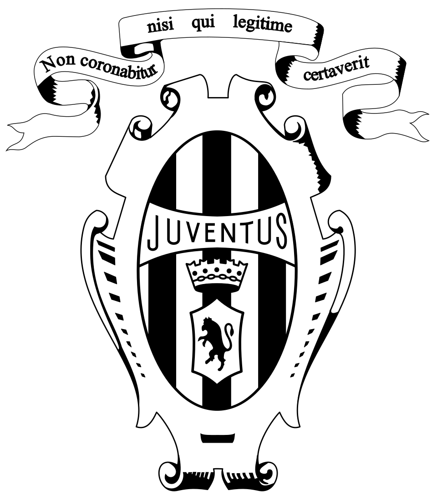
Il logo si arricchisce di dettagli, con l’introduzione delle strisce bianche e nere e una struttura più definita. Inizia a emergere l’identità visiva bianconera.
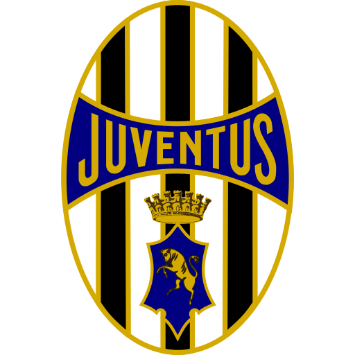
Lo stemma diventa più raffinato e incorpora elementi simbolici di Torino, come il toro. Il design riflette un club sempre più radicato nella sua città.
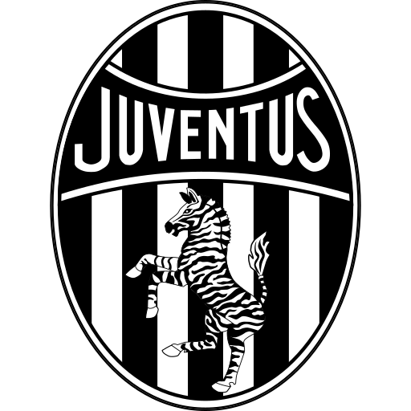
Il logo assume uno stile più classico e istituzionale, con una forma ovale ben definita e una maggiore eleganza grafica.
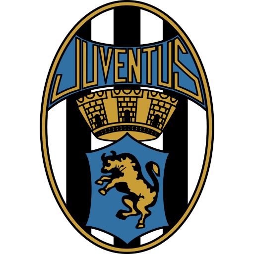
Durante questo periodo, il design si semplifica leggermente mantenendo però i tratti distintivi come le strisce bianconere.
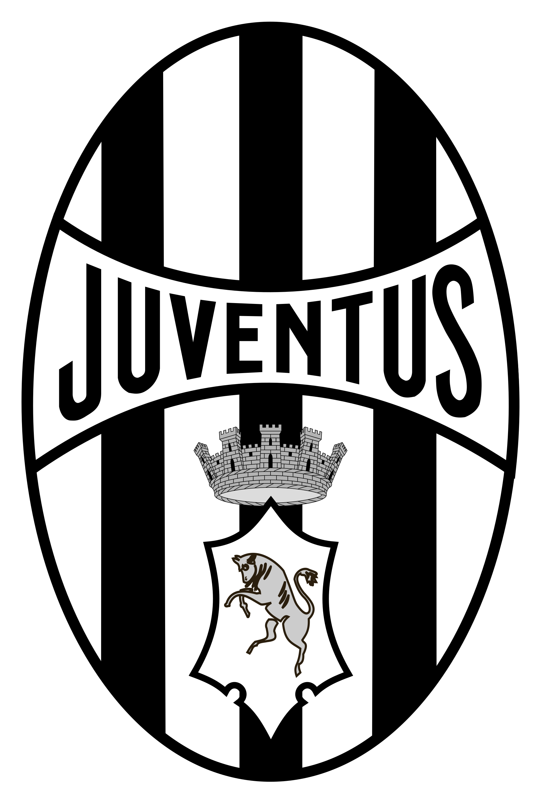
Il logo introduce un aspetto più moderno, con linee più pulite e una grafica più leggibile, adattata ai nuovi standard visivi.
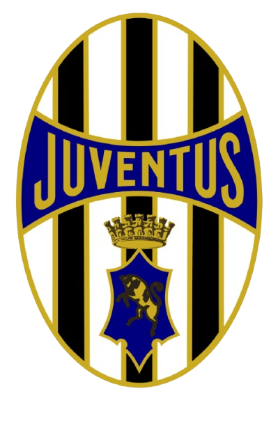
Compare la celebre zebra stilizzata, simbolo forte e riconoscibile della Juventus, che rafforza l’identità del club.
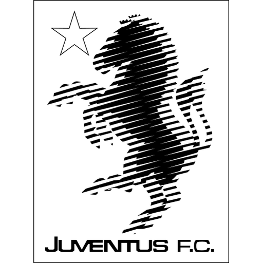
Il logo torna a uno stile più tradizionale, combinando elementi storici e moderni per rappresentare prestigio e continuità.
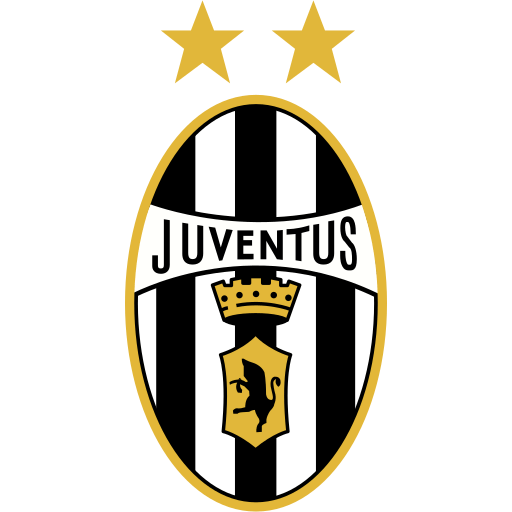
Lo stemma viene aggiornato con un design più raffinato e dettagliato, mantenendo la forma ovale e i simboli storici del club.
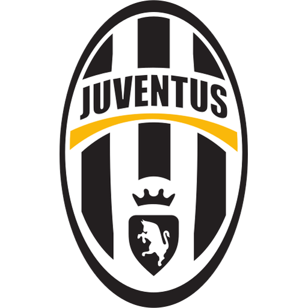
Rivoluzione totale: nasce il logo minimalista con la “J” stilizzata, simbolo di innovazione e globalizzazione del marchio Juventus.
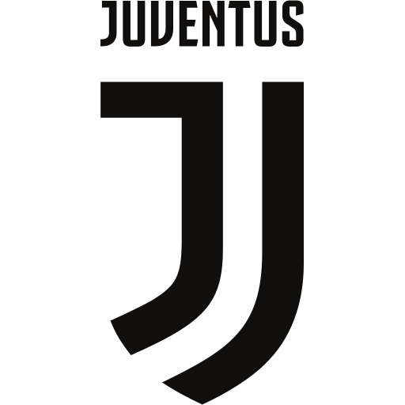
Il logo viene leggermente adattato per una migliore integrazione digitale, mantenendo la “J” come elemento centrale e iconico.
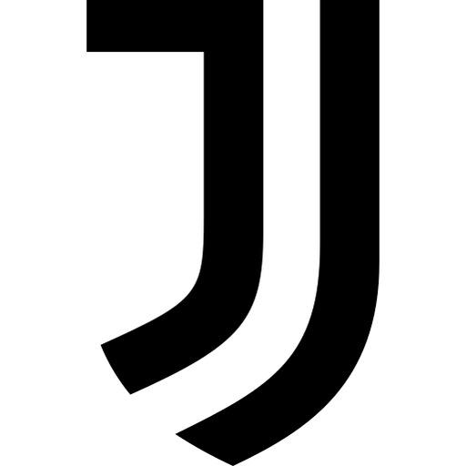